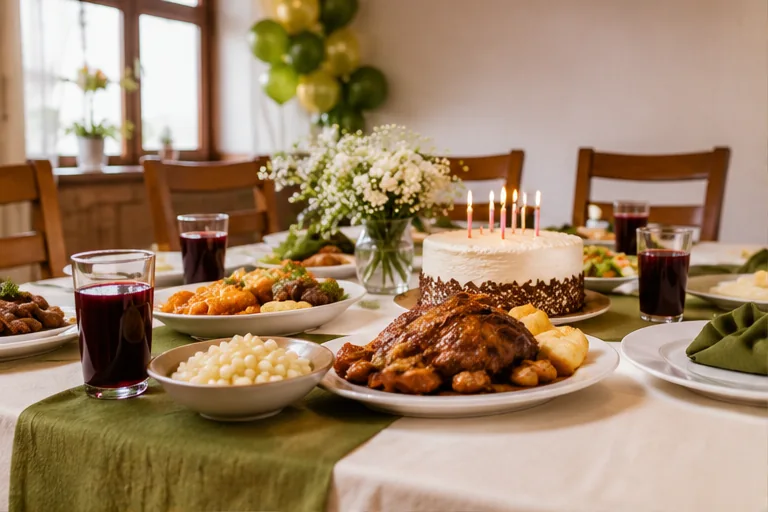
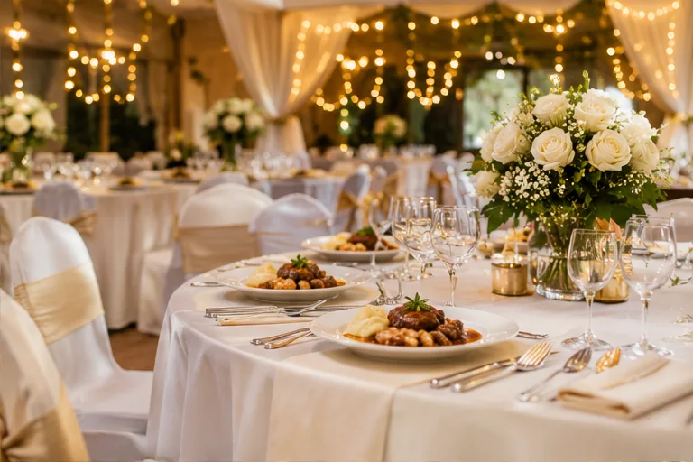
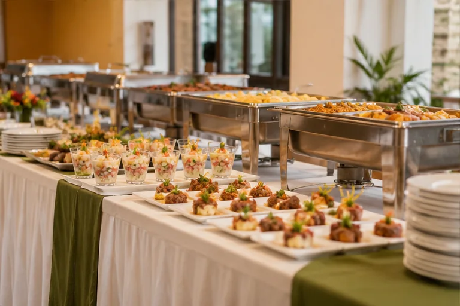
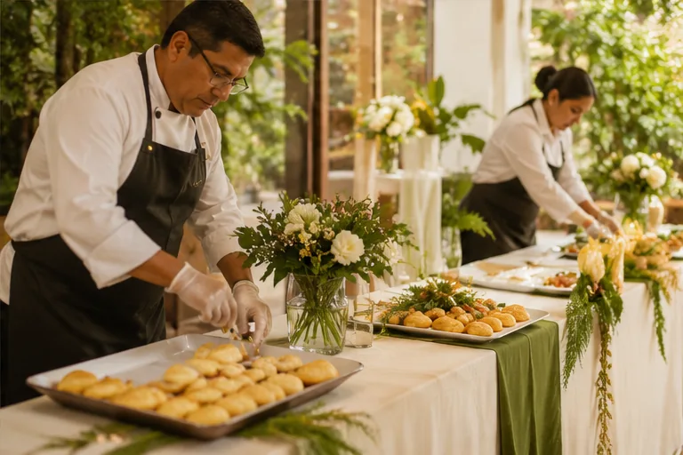
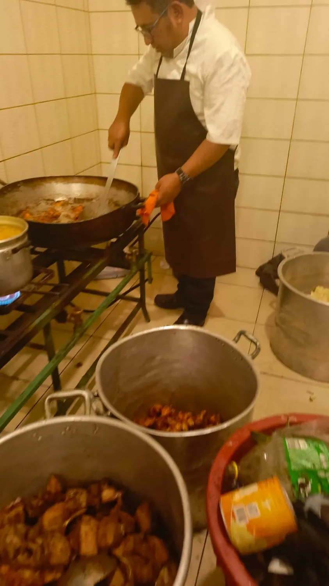
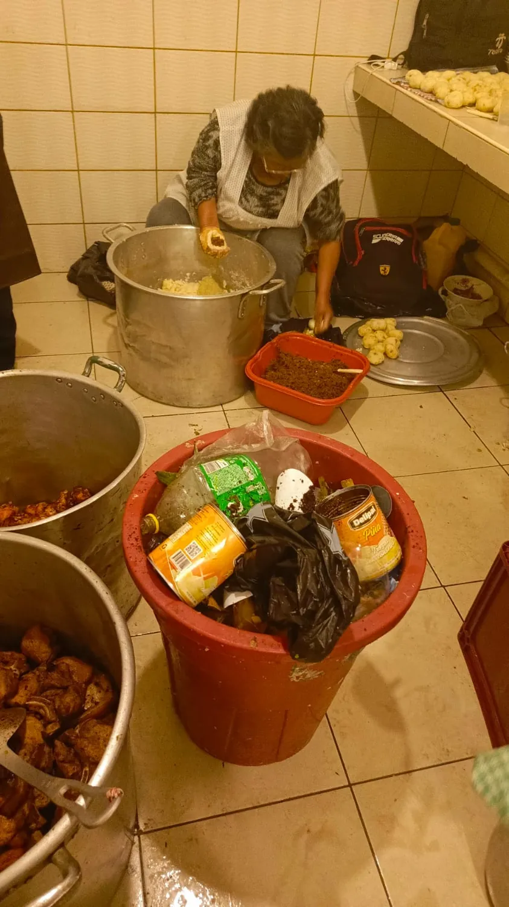
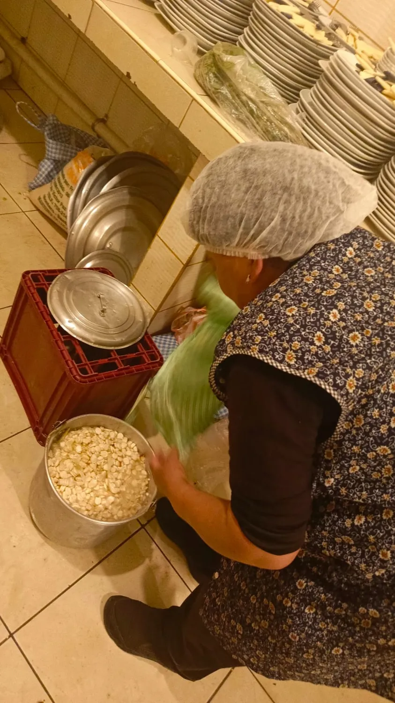
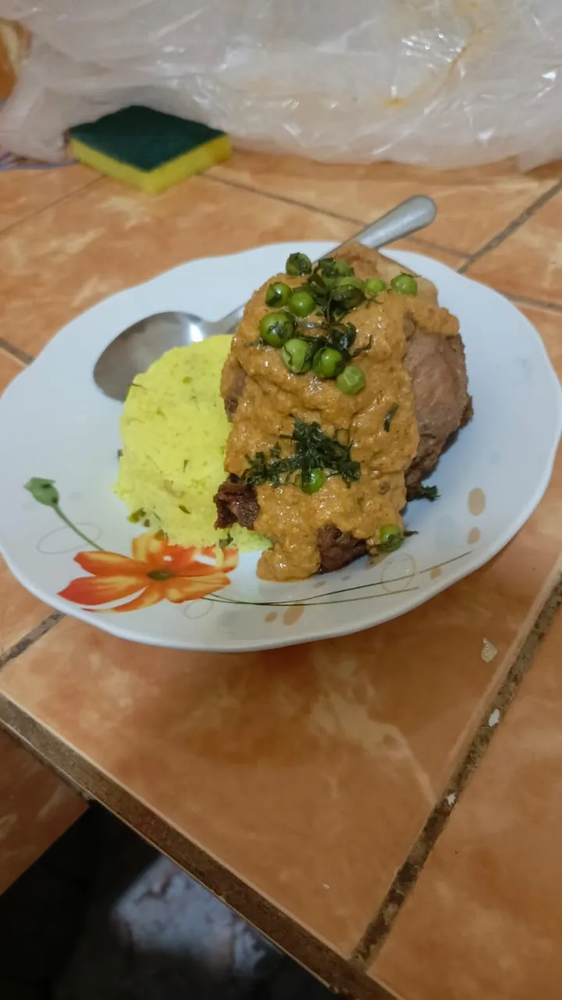

01Celebraciones familiares
Cumpleaños, reuniones y fechas especiales.
SABORES QUE REÚNEN
Cocina tradicional boliviana y propuestas gastronómicas para compartir momentos especiales. Diseñamos cada servicio según tu evento.

PARA CADA OCASIÓN
Organizamos propuestas gastronómicas de acuerdo con el estilo y tamaño de tu celebración.

01Cumpleaños, reuniones y fechas especiales.

02Menús y atención pensados para compartir.

03Alternativas para reuniones y encuentros de trabajo.

04Una propuesta conversada según tus necesidades.
DETRÁS DE CADA EVENTO
Un vistazo al trabajo en cocina y a algunas preparaciones realizadas por el equipo.




JÁUREGUI CATERING & EVENTOS
Somos una propuesta gastronómica enfocada en la preparación de platos tradicionales y menús personalizados para celebraciones. Cada evento se coordina directamente con el cliente para definir cantidades, menú, presupuesto y condiciones.
La atención se realiza mediante llamada o WhatsApp y los acuerdos se formalizan por contrato.
Conversemos sobre tu evento →HABLEMOS DE TU EVENTO
Cuéntanos qué estás organizando. Te atenderemos directamente para revisar el menú, las cantidades y la cotización.
Atención coordinada de manera directa. No contamos con atención en un local abierto al público.